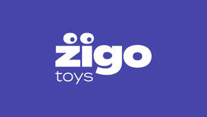

Trade Mark Journal No.2026/012 20 March 2026
UK00004349589 5 March 2026 (16,28,35)

- Class 16
- Paper, cardboard and goods made from these materials; printed matter; book binding material; photographs; stationery; adhesives for stationery or household purposes; artists’ materials; paint brushes; typewriters packaging materials; printers’ type; printing blocks; disposable nappies of paper for babies; printed publications; paint boxes for children; cheque book holders.
- Class 28
- Games and playthings; playing cards; gymnastic and sporting articles; decorations for Christmas trees; childrens’ toy bicycles; Toy dolls; Toy playsets; Toy figurines; Toy robots; Toy furniture; Toys; Toy cars; Toy putty; Toy balls; Toy balloons; Toy glockenspiels; Toy airplanes; Toy bakeware and toy cookware; Toy xylophones; Toy pistols; Pistols (Toy -); Toy vehicle playsets; Toy guns; Toy harmonicas; Toy aeroplanes; Toy scooters; Toy rockets; Toy pianos; Toy figures; Toy gliders; Toy prams; Toy fireworks; Toy vehicles; Toy weapons; Toy jewellery; Toy bakeware; Toy animals; Toy tableware; Toy models; Radio-controlled toy robots; Toy trains; Toy strollers; Toy figure playsets; Toy trucks; Toy action figurines; Ride-on toys; Toy dogs; Toy mobiles; Toy automobiles; Toy food; Radio-controlled toys; Toy guitars; Ride-on toy vehicles; Toy boats; Toy watches; Toy binoculars; Toy pinwheels; Toy cookware; Wind-up toys; Toy bicycles; Toy swords; Toy holsters; Toy armor; Toy brooches; Toy whistles; Toy aircraft; Toy sets; Toy horns; Radio-controlled toy vehicles; Vehicles (Radio-controlled toy -); Toy microscopes; Toy fish; Toy dough; Toy pushchairs; Toy hats; Toy telescopes; Toy cameras; Toy castles; Radio-controlled toy airplanes; Toy wheelbarrows; Toy wagons; Radio-controlled toy aeroplanes; Toy lorries; Toy tools; Toy birds; Remote-controlled toy vehicles; Toy fingernails; Clothing for toy figures; Toy projectors; Toy periscopes; Toy telephones; Toy model cars; Toy microphones; Plush toys; Toy houses; Toy plants; Radio-controlled toy helicopters; Miniature car models [toys or playthings]; Toy miniature model boats; Toy blocks; Modeled plastic toy figurines; Inflatable ride-on toys; Toy trumpets; Toy windmills; Model toys; Remote-controlled toy planes; Stuffed toy animals; Collectable toy figures; Toy flowers; Masks (Toy -); Toy masks; Cuddly toys; Toy arrows; Pet toys; Toy model vehicles; Fidget toys; Windup toys; Battery-operated action toys; Plastic toys; Stuffed toys; Toy musical boxes; Children's ride-on toy vehicles; Toy banks; Inflatable toys; Toy model kits; Dog toys; Model cars [toys or playthings]; Toy garages; Play mats for use with toy vehicles [playthings]; Toy music boxes; Bendable toys; Rockets being toy models; Toy tents; Toy sewing sets; Toy pedal cars; Toy foam hands; Positionable toy figures; Wooden toys; Toy sling planes; Toy car tracks; Toy racing sets; Toy model kit cars; Toy nuchukus; Toy action figures; Toy trick noisemakers; Toy tool sets; Toy imitation cosmetics; Toy cap pistols; Toy model hobbycraft kits.
- Class 35
- Advertising; business management; business administration; office functions; organisation, operation and supervision of loyalty and incentive schemes; advertising services provided via the Internet; production of television and radio advertisements; accountancy; auctioneering; trade fairs; opinion polling; data processing; provision of business information; retail services connected with the sale of toys and baby products; Sales promotions at point of purchase or sale, for others.
Zigo Toys UK Ltd